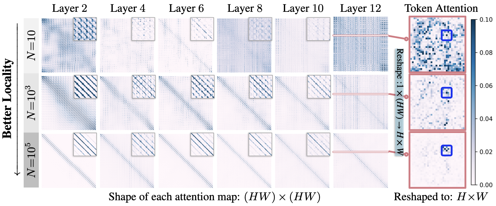
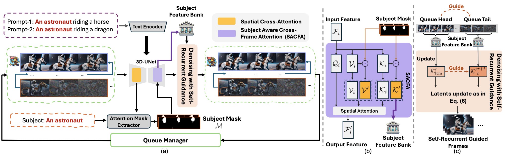
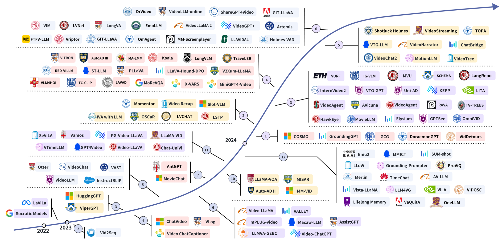
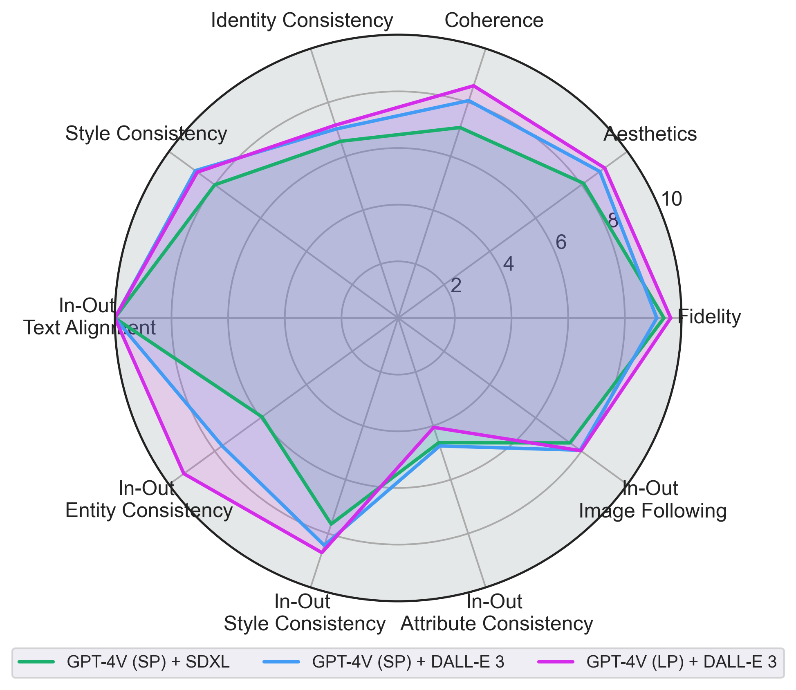
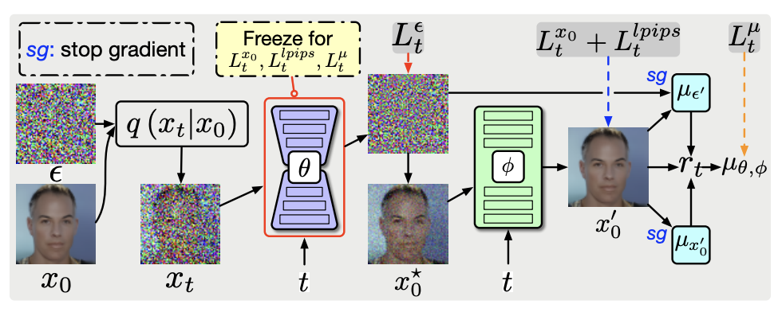

|
Jie An [安 捷] Hi! I am an Applied Scientist at Amazon AGI, where I work on image and video generation models as well as omni understanding and generation models. Previously, I was a Research Scientist at Meta Reality Labs, where I worked on 3D generation and world modeling. I received my Ph.D. in Computer Science from University of Rochester, advised by Prof. Jiebo Luo, where I received the ACM SIGMM Outstanding Ph.D. Thesis Award. Earlier, I earned my bachelor's and master's (with honor) degrees in Applied Mathematics from Peking University, advised by Prof. Jinwen Ma. I was a research intern at Apple (Seattle, 2024–2025), working with Prof. Alexander Schwing. Before that, I interned at Microsoft Cloud & AI (Redmond, 2023–2024, now part of Microsoft AI) and Meta FAIR (New York City, 2022), hosted by Dr. Zhengyuan Yang and Prof. Harry Yang. My research primarily focuses on visual content generation. I am particularly interested in foundational generative models, text-to-video generation, physics AI/world modeling, and artistic generation/style transfer. My research is driven by a long-term vision: from developing a fundamental understanding of generative models, to building increasingly capable foundation models, and ultimately advancing toward visual artificial general intelligence (VisualAGI). Contact: pkuanjie [at] gmail [dot] com Email / CV / Google Scholar / Github / LinkedIn / Name Pronounce |

|
Thesis |
|
Publications & Preprints |
|

|
On Inductive Biases That Enable Generalization of Diffusion Transformers
Jie An, De Wang, Pengsheng Guo, Jiebo Luo, Alexander Schwing NeurIPS 2025 | Project Page | Code | Featured at Apple MLR | BibTex We find that the generalization ability of DiTs is linked to an attention locality bias: despite access to global tokens, DiTs naturally develop locality patterns in certain attention layers. |

|
Latent-Reframe: Enabling Camera Control for Video Diffusion Model without Training
Zhenghong Zhou*, Jie An*, Jiebo Luo ICCV 2025 | Project Page | BibTex We incorporate a 3D point cloud model based on MonST3R into a video diffusion model, which enables arbitrary camera trajectory control in video generation, without training. |
|

|
Ouroboros-Diffusion: Exploring Consistent Content Generation in Tuning-free Long Video Diffusion
Jingyuan Chen, Fuchen Long, Jie An, Zhaofan Qiu, Ting Yao, Jiebo Luo, Tao Mei AAAI 2025 | BibTex We introduce a FIFO-style training-free approach that can enable a video diffusion model to generate infinite long videos in sampling stage. |
|

|
Video Understanding with Large Language Models: A Survey
Y. Tang, J. Bi, S. Xu, L. Song, S. Liang, T. Wang, D. Zhang, Jie An and others TCSVT | GitHub | BibTex We present a comprehensive survey about using LLMs/LMMs for video understanding. |
|

|
OpenLEAF: Open-Domain Interleaved Image-Text Generation and Evaluation
Jie An*, Zhengyuan Yang, Linjie Li, Jianfeng Wang, Kevin Lin, Zicheng Liu, Lijuan Wang, Jiebo Luo ACM MM (BNI Track) 2024 | BibTex We introduce a benchmark dataset, an evaluation pipeline, and a set of baseline models for interleaved image-text generation task. |
|

|
Bring Metric Functions into Diffusion Models
Jie An, Zhengyuan Yang, Jianfeng Wang, Linjie Li, Zicheng Liu, Lijuan Wang, Jiebo Luo IJCAI 2024 | BibTex We study how to ultilize LPIPS loss in diffusion model training to improve the image generation quality. |


|
Latent-Shift: Latent Diffusion with Temporal Shift for Efficient Text-to-Video Generation
Jie An*, Songyang Zhang*, Harry Yang, Sonal Gupta, Jia-Bin Huang, Jiebo Luo and Xi Yin Arxiv 2023 | Project Page | BibTex We propose an efficient text-to-video generation method based on latent diffusion model and temporal shift. |

|
Learning to Evaluate the Artness of AI-generated Images
Junyu Chen, Jie An, Hanjia Lyu, Jiebo Luo TMM 2024 | BibTex We propose a rank-based method to evaluate the artness level of AI-generated artworks. |

|
Holistic Visual-Textual Sentiment Analysis with Prior Models
Junyu Chen, Jie An, Hanjia Lyu and Jiebo Luo MIPR 2024 | BibTex We ultilize multi-modal expert features to assist the sentiment analysis task. |


|
QuantArt: Quantizing Image Style Transfer Towards High Visual Fidelity
Siyu Huang*, Jie An*, Donglai Wei, Jiebo Luo and Hanspeter Pfister CVPR 2023 | Code | BibTex QuantArt allows the style transfer model take the reference from the whole artistic picture dataset, leading to improved visual fidelity. |


|
Make-A-Video: Text-to-video Generation Without Text-video Data.
Uriel Singer*, Adam Polyak*, Thomas Hayes*, Xi Yin*, Jie An, Songyang Zhang, Qiyuan Hu, Harry Yang, Oron Ashual, Oran Gafni, Devi Parikh, Sonal Gupta and Yaniv Taigman ICLR 2023 | BibTex We propose a text-to-video generation method based on diffusion model. |


|
Domain-Scalable Unpaired Image Translation via Latent Space Anchoring
Siyu Huang*, Jie An* , Donglai Wei, Zudi Lin, Jiebo Luo and Hanspeter Pfister TPAMI | Code | BibTex We propose a GAN-based multi-domain image translation method that can extend to any unseen domain without the need to train the core backbone. |


|
Is Bigger Always Better? An Empirical Study on Efficient Architectures for Style Transfer and Beyond
Jie An, Tao Li, Haozhi Huang, Jinwen Ma and Jiebo Luo WACV 2023 | BibTex We study whether the big VGG19 architecture is the best backbone for image style transfer and explore its efficient alternatives. |


|
Facial Attribute Transformers for Precise and Robust Makeup Transfer
Zhaoyi Wan, Haoran Chen, Jie An, Wentao Jiang, Cong Yao and Jiebo Luo WACV 2022 | BibTex We propose an new transformer-based method for makeup transfer and removal. |


|
ArtFlow: Unbiased Image Style Transfer via Reversible
Neural Flows
Jie An*, Siyu Huang*, Yibing Song, Dejing Dou, Wei Liu and Jiebo Luo CVPR 2021 | Code | BibTex We propose an unbiased style transfer method based on neural flows to address the content leak issue in style transfer. |


|
Global Image Sentiment Transfer
Jie An, Tianlang Chen, Songyang Zhang and Jiebo Luo ICPR 2020 | BibTex We propose a method to transfer the global sentiment of images. |


|
Ultrafast photorealistic style transfer via neural architecture search
Jie An*, Haoyi Xiong*, kun Huan and Jiebo Luo AAAI 2020 (Oral Presentation) | Code | BibTex We propose a neural architecture search framework to discover efficient architectures for photo-realistic style transfer. |

|
Pyramid attention network for semantic segmentation
Hanchao Li, Pengfei Xiong, Jie An, and Lingxue Wang BMVC 2018 | BibTex We propose a new network architecture for semantic image segmentation. |
Invited Talks |
|
Work & Internships |

|
Amazon AGI
[2025/07 - Current] Applied Scientist Video Generation Architecture, Parallelism, and Pre-training. Omni Understanding and Generation Models. Reinforcement Learning for Image Generation. |

|
Meta Reality Lab
[2025/05 - 2025/07] AI Research Scientist 3D Generation and World Modeling. |
|
|
Apple
[2024/05 - 2025/04] Research Intern Advisors: Alexander Schwing, Andy (De) Wang, Pengsheng Guo Project: Diffusion Model Analysis |

|
Microsoft Cloud & AI
[2023/02 - 2024/4] Research Intern Advisors: Zhengyuan Yang, Jianfeng Wang, Linjie Li, Lijuan Wang, Zicheng Liu Project: Diffusion Model and Visual-Language Generation. |
|
|
Meta FAIR
[2022/05 - 2022/12] Research Intern Advisors: Harry Yang, Xi Yin, Sonal Gupta Project: Text-to-Video Generation. |
Collaborators |
|
Academic Services |
Conference Reviewer
Journal Reviewer
|
Honors & Awards |
|